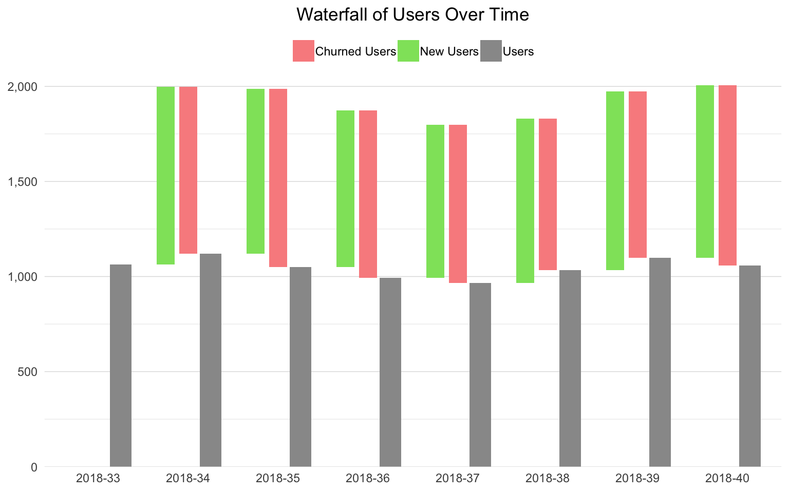

Credit to Jamarius Taylor for thinking up this one. The idea is that visitors that are new have the opportunity to return to the site (just like customers who buy once have an opportunity to buy more). Obviously, not every site can reasonably expect all visitors to return, and, even those that do will have differing timeframes within which they would expect visitors to return.
Nonetheless, this seems to be an illustrative example. We’re going to use a waterfall chart for the visualization. The waterfalls package offers one option for doing this, but that doesn’t exactly seem to be a mainstream package, so this example simply relies on plain ol’ ggplot2 and the various machinations required therein.
If a website has zero churn, then we would expect each week’s users to be the number of users from the _previous week plus the number of new users from the current week. This assumes that active users return at least once per week (which is fair, if, clearly, an ideal that is unachievable):
\[[\#\ of\ Users\ Current\ Week] = [\#\ of\ Users\ Previous\ Week] + [\#\ of\ New\ Users\ Current\ Week]\]
Therefore, one way to calculate the churn is to take that theoretical ideal and subtract the actual number of users from it. That would be the number of non-returning users:
\[[Churned\ Visitors] = [\#\ of\ Users\ Previous\ Week] + [\#\ of\ New\ Users\ Current\ Week] - [\#\ of\ Users\ Current\ Week]\]
The churn rate would then be:
\[[Churn\ Rate] = \frac{[Churned\ Visitors]}{[\#\ of\ Users\ Previous\ Week]}\]
We’re not actually going to calculate Churn Rate in this example…but we could.
Be sure you’ve completed the steps on the Initial Setup page before running this code.
For the setup, we’re going to load a few libraries, load our specific Google Analytics credentials, and then authorize with Google.
# Load the necessary libraries. These libraries aren't all necessarily required for every
# example, but, for simplicity's sake, we're going ahead and including them in every example.
# The "typical" way to load these is simply with "library([package name])." But, the handy
# thing about using the approach below -- which uses the pacman package -- is that it will
# check that each package exists and actually install any that are missing before loading
# the package.
if (!require("pacman")) install.packages("pacman")
pacman::p_load(googleAnalyticsR, # How we actually get the Google Analytics data
tidyverse, # Includes dplyr, ggplot2, and others; very key!
devtools, # Generally handy
googleVis, # Useful for some of the visualizations
scales) # Useful for some number formatting in the visualizations
# Authorize GA. Depending on if you've done this already and a .ga-httr-oauth file has
# been saved or not, this may pop you over to a browser to authenticate.
ga_auth(token = ".ga-httr-oauth")
# Set the view ID and the date range. If you want to, you can swap out the Sys.getenv()
# call and just replace that with a hardcoded value for the view ID. And, the start
# and end date are currently set to choose the last 30 days, but those can be
# hardcoded as well.
view_id <- Sys.getenv("GA_VIEW_ID")
end_date <- Sys.Date() - as.POSIXlt(Sys.Date())$wday - 1 # The most recent Saturday
start_date <- end_date - 55 # 8 weeks earlierIf that all runs with just some messages but no errors, then you’re set for the next chunk of code: pulling the data.
This is pretty straightforward. We just need to pull users and new users by week (this could also be done by week):
# Pull the data. See ?google_analytics_4() for additional parameters.
ga_data <- google_analytics(viewId = view_id,
date_range = c(start_date, end_date),
metrics = c("users", "newUsers"),
dimensions = c("week","year"))
# Go ahead and do a quick inspection of the data that was returned. This isn't required,
# but it's a good check along the way.
head(ga_data)| week | year | users | newUsers |
|---|---|---|---|
| 08 | 2018 | 1174 | 951 |
| 09 | 2018 | 1265 | 1013 |
| 10 | 2018 | 1368 | 1126 |
| 11 | 2018 | 1469 | 1242 |
| 12 | 2018 | 1506 | 1250 |
| 13 | 2018 | 1616 | 1337 |
This just ensures the data is easy enough to look at and interpret.
# Using dplyr, sort by year and week.
ga_data <- ga_data %>%
arrange(year, week)
# Take a quick look at the result.
head(ga_data)| week | year | users | newUsers |
|---|---|---|---|
| 08 | 2018 | 1174 | 951 |
| 09 | 2018 | 1265 | 1013 |
| 10 | 2018 | 1368 | 1126 |
| 11 | 2018 | 1469 | 1242 |
| 12 | 2018 | 1506 | 1250 |
| 13 | 2018 | 1616 | 1337 |
# Calculate the churn and add some date levels
totals_and_churn_df <- ga_data %>%
mutate(previous_week_users = lag(users, 1, default = 0)) %>% # Get previous week users
mutate(churned_users = previous_week_users + newUsers - users) %>% # Calculate churned users
mutate(date = paste(year,week, sep="-")) %>% # Calculate a "week" as YYYY-WW
mutate(date = factor(date, levels = date)) %>% # Make date a factor
select(date, users, newUsers, previous_week_users, churned_users)
# NA the churned users and new users for the first row
totals_and_churn_df$churned_users[1] <- NA
totals_and_churn_df$newUsers[1] <- NA
# Display the results
head(totals_and_churn_df)| date | users | newUsers | previous_week_users | churned_users |
|---|---|---|---|---|
| 2018-08 | 1174 | NA | 0 | NA |
| 2018-09 | 1265 | 1013 | 1174 | 922 |
| 2018-10 | 1368 | 1126 | 1265 | 1023 |
| 2018-11 | 1469 | 1242 | 1368 | 1141 |
| 2018-12 | 1506 | 1250 | 1469 | 1213 |
| 2018-13 | 1616 | 1337 | 1506 | 1227 |
Unfortunately, waterfall charts are kind of tricky to do in ggplot2. But, we can use ‘geom_rect()’ to draw this, which means we need to define the min and max for x and y for each box on the chart. We’ll go ahead and introduce some redundancy in the plotting for the sake of clarity by defining three types of bars that, for each week, will appear in this order:
The xmin and xmax for each of these will differ: newUsers will be offset to the left of the week, and users will be offset to the right. Yeesh. This is confusing. Ultimately, this is what the data looks like:
# Add a few intermediate values that we'll use after we convert to a long forma
waterfall_df <- totals_and_churn_df %>%
mutate(week_max = users + churned_users,
week_current_users = users)
# Convert to long format
waterfall_df <- waterfall_df %>%
gather(key = "user_type", value = "number_of_users",
-date, -previous_week_users, -week_max, -week_current_users,
na.rm = TRUE)
# Function to calculate xmin, xmax, ymin, and ymax when passed a row from the
# data set.
calc_rect_coords <- function(date, previous_week_users, week_max,
week_current_users, user_type, number_of_users){
x_offset <- 0.25 # Base offset for x for rects
bar_half_width <- 0.1 # Define the bar width
if(user_type == "users"){
xmin <- as.numeric(date) + x_offset - bar_half_width - 0.02 # Make it a little wider
xmax <- as.numeric(date) + x_offset + bar_half_width + 0.02
ymin <- 0
ymax <- number_of_users
user_type = "Users"
} else if(user_type == "churned_users"){
xmin <- as.numeric(date) - bar_half_width
xmax <- as.numeric(date) + bar_half_width
ymin <- week_current_users
ymax <- week_current_users + number_of_users
user_type = "Churned Users"
} else
# New Users
{
xmin <- as.numeric(date) - x_offset - bar_half_width
xmax <- as.numeric(date) - x_offset + bar_half_width
ymin <- previous_week_users
ymax <- previous_week_users + number_of_users
user_type = "New Users"
}
result = data.frame(date = date,
user_type = user_type,
xmin = xmin,
xmax = xmax,
ymin = ymin,
ymax = ymax)
}
# Build out all of our rectangles.
plot_data <- pmap_dfr(waterfall_df, calc_rect_coords)
# This trashes our nice date factor, so drop the one that came back
# and add on our original
plot_data <- select(plot_data, -date)
plot_data <- cbind(plot_data, waterfall_df$date)
plot_data <- plot_data %>%
select(date = `waterfall_df$date`,
user_type,
xmin, xmax, ymin, ymax)
# Display the head
head(plot_data, 20)| date | user_type | xmin | xmax | ymin | ymax |
|---|---|---|---|---|---|
| 2018-08 | Users | 1.13 | 1.37 | 0 | 1174 |
| 2018-09 | Users | 2.13 | 2.37 | 0 | 1265 |
| 2018-10 | Users | 3.13 | 3.37 | 0 | 1368 |
| 2018-11 | Users | 4.13 | 4.37 | 0 | 1469 |
| 2018-12 | Users | 5.13 | 5.37 | 0 | 1506 |
| 2018-13 | Users | 6.13 | 6.37 | 0 | 1616 |
| 2018-14 | Users | 7.13 | 7.37 | 0 | 1364 |
| 2018-15 | Users | 8.13 | 8.37 | 0 | 1200 |
| 2018-09 | New Users | 1.65 | 1.85 | 1174 | 2187 |
| 2018-10 | New Users | 2.65 | 2.85 | 1265 | 2391 |
| 2018-11 | New Users | 3.65 | 3.85 | 1368 | 2610 |
| 2018-12 | New Users | 4.65 | 4.85 | 1469 | 2719 |
| 2018-13 | New Users | 5.65 | 5.85 | 1506 | 2843 |
| 2018-14 | New Users | 6.65 | 6.85 | 1616 | 2703 |
| 2018-15 | New Users | 7.65 | 7.85 | 1364 | 2362 |
| 2018-09 | Churned Users | 1.90 | 2.10 | 1265 | 2187 |
| 2018-10 | Churned Users | 2.90 | 3.10 | 1368 | 2391 |
| 2018-11 | Churned Users | 3.90 | 4.10 | 1469 | 2610 |
| 2018-12 | Churned Users | 4.90 | 5.10 | 1506 | 2719 |
| 2018-13 | Churned Users | 5.90 | 6.10 | 1616 | 2843 |
With all that data prep, we can now plot the results. The way to read this is that, each week, there is a number of users. Then, for the next week, in order, we:
The thing that may be a little misleading here is that we’re making an assumption that “non-churned users” actually return to the site each subsequent week. But, that may not be too bad, especially if we’re looking to illustrate that it’s a constant battle to get new traffic to the site!
As one note, ideally, this chart would also include horizontal lines connecting the top of each Users bar to the bottom of each New Users bar, from the top of each New Users bar to the top of each Churned Users bar, and from the bottom of each Churned Users bar to the top of each Users bar. But, that’s an even bigger hassle, so it’s not included here.
# Define the theme
theme_waterfall <- theme_light() +
theme(legend.position = "top",
legend.title = element_blank(),
plot.title = element_text(hjust=0.5),
panel.grid.major.x = element_blank(),
panel.border = element_blank(),
axis.ticks = element_blank(),
axis.title = element_blank())
# Build the actual plot. What we're actually doing here is drawing each bar as a
# separate rectangle.
gg_results <- ggplot(plot_data, aes(xmin=xmin, xmax=xmax, ymin=ymin, ymax=ymax,
fill = user_type, x=date)) +
geom_rect() +
scale_fill_manual(values = c("#f98e8e","#8ee26a","gray60")) +
scale_y_continuous(label = comma, expand = c(0,0)) +
labs(title = "Waterfall of Users Over Time", y="Users") +
theme_waterfall
# Output the plot
gg_results
This site is a sub-site to dartistics.com